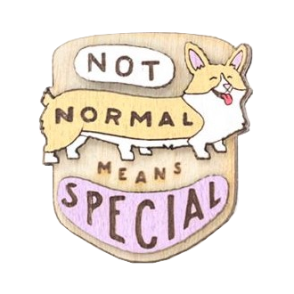

Деревянный значок "Корги особенный"

Описание товара
Значок с шестилапой корги "Не такой как все - значит особенный".
Характеристики товара
| Размер: | ~3,5 см |
| Состав: | бук, берёза |
| Производитель: | waf-waf(Санкт-Петербург) |
Подробное описание товара
Значок "Корги особенный" станет отличным подарком для тех, кто обожает собак! Получатель обязаительно оценит ваш подход к подарку - деревянные значки выглядят очень оригинально и стильно. Данный значок выполнен из двух видов дерева - бука и березы- и имеет яркую расцветку. Также в дополнение к значку вы можете приобрести подарочную упаковку - крафтовый пакетик, деревянный кейс, фирменный мешочек!